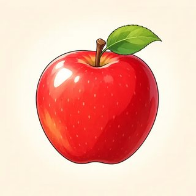
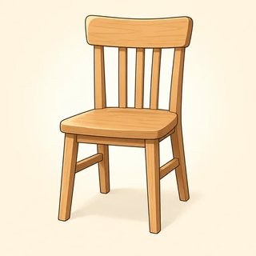

Precision & Detail
Small words, big difference. Choose a, the or no article. Choose -ing or to after a verb. Say exactly how much: too cold, not warm enough, so kind, a few friends. Then use it all to complain politely and to give a compliment.
✏️ Write · 👂 Listen · 🗣️ Say · 👥 Work with a partner · 📖 Read
Mistakes with these small words almost never stop people from understanding you. We are polishing your English, not fixing something broken. In the speaking tasks you can talk about your real life, or use a new identity card, or invent something. All are good. You can always say "Pass."
Articles — a / an, the, or Nothing?
Class C17Jobs always take a / an:
 She's a doctor.
She's a doctor. He's a nurse.
He's a nurse. I'm a mechanic.
I'm a mechanic. She wants to be a chef.
She wants to be a chef.- 👷 He's an engineer.
- 🗂️ I'm an office assistant.
a or an? Listen to the first sound, not the first letter:

an apple an egg
an egg an umbrella
an umbrella- ⏰ an hour (silent h)
- 🎓 a university ("you")
- 👮 a uniform ("you")
Fixed phrases (learn them as one piece):
 go to bed
go to bed go to school / work
go to school / work- 🍳 have breakfast / lunch / dinner
 by bus · by car (but: on the bus)
by bus · by car (but: on the bus) play the guitar / the piano
play the guitar / the piano play soccer / tennis (no article)
play soccer / tennis (no article)- go to the hospital (US)
Does my listener already know which one I mean?
| YES → the | second mention · only one exists · we can both see it · the best / the first · the + more information | I saw a dog. The dog was huge. · the sun · Close the door. · the best day · the woman who called you |
|---|---|---|
| NO + one thing → a / an | new · any one · a job | I bought a phone. · Pass me a pen. · She's an engineer. |
| NO + general → — | plural or uncountable, in general | I like cats. · Water is important. · Life is hard. |
One noun, three ways: I need a coffee. (any cup) · The coffee here is great. (this coffee) · I don't drink coffee. (in general)
| No article | most countries (Japan, Mexico) · languages (Spanish) · meals (lunch) · days (on Monday) · cities and streets (Chicago, Main Street) · sports (soccer) |
|---|---|
| the | the USA · the UK · the Philippines · the internet · play the guitar |
Your teacher reads a short text. Write a, an, the or — (no article).
I moved to (1) new neighborhood last month. It's (2) quiet place near (3) river. There's (4) small park at the end of my street, and (5) park has (6) old wooden bridge. Every morning I see (7) elderly man with (8) dog. (9) man always says hello, and (10) dog always wants to play. I usually walk to (11) work, but when it rains, I go by (12) bus. (13) life here is slower, and I love it.
👥 Compare with a partner. Choose three gaps and say why: "The park, because it's the second time."
1. She's honest person and works as nurse.
2. I love music, especially songs my grandmother taught me.
3. We usually have dinner at seven and then watch news.
4. I bought phone yesterday, but phone stopped working today.
5. They live in Italy, near sea.
6. The children go to school by bus every morning.
7. My sister plays piano and also plays tennis.
8. I was so tired that I went to bed early.
9. We waited for hour, and then doctor finally called my name.
10. Earth goes around sun.
You are an editor for the community center newsletter. A new volunteer wrote this text. Her ideas are great, but her first language has no articles. Find 12 mistakes: 6 missing articles, 3 extra articles and 3 wrong articles. Careful: some articles are already correct!
Editor's code: ^ = add an article · / = delete it · circle = change it (write the new one above)
Welcome to our community garden! Last spring, group of neighbors decided to turn empty lot on the Maple Street into garden. Today, a garden has more than forty vegetable beds. Most beds belong to families, but there is also bed for the elementary school next door. The children come every Friday with their teacher, who is also volunteer here. We grow the tomatoes, beans, and herbs, and we give the extra vegetables to a food bank. The gardening is good for your health! Water is free, but please bring your own tools. We meet on first Saturday of every month at 10 a.m. New members are always welcome — you don't need to be a expert. Just bring the hat and a smile!
👥 Compare with another pair. For each change, say the reason: first mention · second mention · a job · general · a street · first / best · the sound.
Each sentence has one article mistake: missing, extra, or wrong. Write the correct sentence.
1. My brother wants to be doctor. →
2. I think the life is beautiful. →
3. She plays a guitar in a band. →
4. We went to the France on vacation. →
5. Can you close a window? It's cold. →
6. I don't really like the dogs. (dogs in general) →
Choose one noun: tea · bread · music · soccer · coffee. Write three sentences: one with a / an, one with the, one with no article. Then write why.
Example: I'd like a tea. (one cup) · The tea here is lovely. (this tea) · I drink tea every day. (in general)
Nina: I watched a movie and read a book this weekend.
Omar: Nice! Was the movie any good?
Nina: The movie was slow, honestly, but the book was great. The ending really surprised me.
Omar: See, that's why I always trust a good book over a new movie!
Find the a → the pattern. Why does Nina say a movie and then the movie?
✏️ Choose a place: a real place, a place card, or the place on a new identity card. Make notes. Then describe it; your partner draws it.
| New things (a / an) | More about them (the) |
|---|---|
| There's a … | The … is … |
| There's an … | The … is next to the … |
| There's a … | The … is … |
| There's a … | The … is … |
| In general (no article): It sells … · I love … there. · People … | |
🗣️ Your partner asks: "Where's the sofa?" "Is there a window?"
- ☐ ask the question: "Does my listener know which one?"
- ☐ use a / an for new things and jobs, and choose an by the sound
- ☐ use the for the second mention and for things we both know
- ☐ use no article when I talk in general: I love music.
- ☐ find and fix article mistakes in a text
- ☐ describe a place I know in 8 sentences
Does my first language have articles? Which article mistake do I make most?
Verb Patterns — -ing or to?
Class C18 I enjoy cooking.
I enjoy cooking. She avoids driving in the city.
She avoids driving in the city. Have you finished reading it?
Have you finished reading it? He keeps forgetting his keys.
He keeps forgetting his keys. Do you mind waiting?
Do you mind waiting? I want to travel more.
I want to travel more. They offered to pay.
They offered to pay. Swimming is good for you.
Swimming is good for you.
| verb + -ing | enjoy, avoid, finish, suggest, keep, mind, can't stand, feel like, give up, miss, practice | He suggested going out for dinner. |
|---|---|---|
| verb + to | want, decide, hope, promise, learn, offer, refuse, manage, agree, plan, need | We decided to stay home. |
| verb + person + to | tell, ask, advise, want, remind, invite, warn | She told him to wait outside. |
| preposition + -ing | good at, interested in, tired of, before, after, instead of, look forward to | I'm looking forward to seeing you. |
| -ing = subject | the action is the "thing" | Learning a language takes time. |
The meaning changes!
| + -ing | + to | |
|---|---|---|
| stop | the activity ends: I stopped buying coffee. (no more) | pause in order to: I stopped to buy a coffee. |
| remember | a memory (past ←): I remember locking the door. | a task (future →): Remember to lock the door. |
| forget | a memory: I'll never forget meeting her. | a task I didn't do: I forgot to call him. |
| try | a test, an idea: Try turning it off and on. | an effort: I tried to open the jar. |
Write the verb in ( ) as -ing or to + verb.
1. I enjoy (read) before bed.
2. She decided (stay) at home.
3. Do you mind (wait) a few minutes?
4. He's very good at (cook).
5. They offered (pay) for the meal.
6. I'm looking forward to (see) you soon.
7. (learn) a language takes time.
8. We can't afford (buy) a new car this year.
Write -ing or to + verb. The meaning is in ( ).
1. On the drive, we stopped (have) lunch. (we paused in order to eat)
2. The doctor told him to stop (eat) so much sugar. (end the habit)
3. Please remember (mail) the letter. (a task for later)
4. I remember (meet) her at a party years ago. (a memory)
5. My laptop froze, so I tried (restart) it. (a test, an idea to fix it)
6. I'm sorry, I forgot (buy) milk. (I didn't do the task)
7. The window was stuck. I tried (open) it, but I couldn't. (a big effort)
Example: "Please wait outside." She told me… → She told me to wait outside.
1. "Can you help me?" He asked me… →
2. "You should rest." The doctor advised her… →
3. "Come to our party!" They invited us… →
4. "Don't touch the wire." She warned him… →
5. "Don't forget your passport." My mom reminded me… →
Your teacher reads 8 sentences. Circle the meaning: a or b.
1. a) I don't buy coffee anymore. · b) I paused so I could buy a coffee.
2. a) He doesn't work now. · b) He paused so he could work.
3. a) I have a memory of doing it. · b) It's a task for later.
4. a) I have a memory of doing it. · b) It's a task for later.
5. a) It's a memory. · b) I didn't do it.
6. a) I made a big effort. · b) I tested an idea.
7. a) Make a big effort. · b) Test this idea.
8. a) She has a memory of it. · b) She didn't do the task.
Write 5 verbs in each column. Write one true sentence with each verb (real life, a new identity card, or invented). Keep adding verbs to this list!
| + -ing | My sentence | + to | My sentence |
|---|---|---|---|
Now stop, remember or try: write both sentences.
+ -ing:
+ to:
Lena: Did you remember to bring the tickets?
Marco: Yes! And I clearly remember putting them in my bag last night.
Lena: Good. On the way, can we stop to get a coffee?
Marco: Sure. I've been trying to cut down, but I'll never stop drinking it completely!
Find the four meaning-change verbs. Which ones are a memory? Which one is a pause?
🗣️ Walk and ask: "Do you enjoy cooking for other people?" "Do you remember learning to ride a bike?" Write names on the Find Someone Who sheet.
✏️ Then plan your two-minute talk (real, a new identity card, or invented):
| My habits | I enjoy… · I avoid… · I keep… · I can't stand… |
|---|---|
| My plans | I want to… · I've decided to… · I hope to… · I'm looking forward to… |
| My preferences | I'm good at… · I'm interested in… · … is my favorite thing to do. |
| A special verb | I stopped… · I remember… · I'll never forget… · I tried… |
👥 Talk for 2 minutes. Your partner counts the verb patterns on the checker card.
- ☐ use -ing after enjoy, avoid, finish, mind, keep…
- ☐ use to after want, decide, hope, offer, manage…
- ☐ say "She told me to wait." (don't forget the person!)
- ☐ use -ing after a preposition: good at cooking, looking forward to seeing you
- ☐ explain stop / remember / forget / try + -ing or + to
- ☐ talk for two minutes about my habits, plans and preferences
Choose stop, remember, forget or try. Write both versions. What is the difference, in my own words?
How Much? — Complaints & Compliments
Class C19 It's too hot to go outside.
It's too hot to go outside. The room isn't warm enough.
The room isn't warm enough. It's too expensive.
It's too expensive. The jacket is too small.
The jacket is too small. He's tall enough to reach the shelf.
He's tall enough to reach the shelf.
We don't have enough chairs. too much sugar
too much sugar- too many people on the bus
 a little milk
a little milk- a few eggs
| too + adjective | more than you want: a problem | The coffee is too hot (to drink). |
|---|---|---|
| adjective + enough | the right amount (after the adjective!) | She's old enough to drive. |
| enough + noun | (before the noun) | We don't have enough time. |
| too many / too much | many + things you can count · much + things you can't count | too many cars · too much noise |
very hot = a fact · too hot = a problem. For praise, use so or very, not too.
| so | + adjective / adverb (no noun) | It was so hot that we left early. |
|---|---|---|
| such a / an | + (adjective) + one thing | It was such a good movie that I watched it twice. |
| such | + (adjective) + plural / uncountable | They're such kind people. · such nice weather |
| count (friends, minutes) | no count (time, money) | |
|---|---|---|
| 🙂 some, OK | a few friends | a little time |
| 🙁 not many / much | few friends | little time |
all → most → some → none. In general: Most people like music. · A specific group: Most of the people here… · Some of my friends… · None of them…
1. This box is heavy for me to lift.
2. Sorry, I can't come. I have work today.
3. She's not old to watch that movie.
4. There were people at the party.
5. We don't have chairs for everyone.
6. I can't reach the top shelf. I'm not tall .
7. Don't put sugar in my tea, please.
1. It was cold that the lake froze.
2. She's kind person.
3. They were interesting stories.
4. The bus was late that I missed my appointment.
5. We had nice weather that we ate outside.
Join the sentences with so … that or such (a) … that.
6. The movie was very funny. We laughed for hours. →
7. It was a very long meeting. I almost fell asleep. →
A. Write a few, few, a little or little.
1. Don't worry, we still have time before the train. 🙂
2. I've made friends at my new job. 🙂
3. Sadly, people came to the meeting. Almost nobody. 🙁
4. Can I have milk in my coffee, please? 🙂
5. Hurry! There's time left before the store closes. 🙁
B. Write all, most, some or none. Add of only when you need it.
6. people need water to live. (100%, in general)
7. my friends live in other countries now. (the majority)
8. I invited ten people, but them came. (zero)
9. the students in my class passed the test, but a few didn't. (a part, not all)
10. She ate the cake by herself! (the whole thing)
Your teacher reads a review of Rosa's Kitchen. Take notes.
1. When did she go, and with who?
2. Two good things (write the exact words: so … that, such a …):
3. Three problems (too …, not enough …, too many / too much …):
4. What happened with the desserts?
5. How many stars? When would she go back?
"Bad" and "good" don't tell people what to fix, or what you liked. Rewrite each sentence with the word in ( ).
1. The soup is bad. (salt) →
2. The jacket is bad. (small / big enough) →
3. The shower is bad. (hot water) →
4. The bus is bad. (people) →
5. The nurse was good. (so kind that…) →
6. The party was good. (such a great party that…) →
Guest: Excuse me. I'm sorry to bother you, but there's a problem with my room.
Clerk: Oh, I'm sorry to hear that. What's wrong?
Guest: Well, it's too cold. The heater is on, but it isn't warm enough. And there are only a few towels. That's not enough for three people.
Clerk: I'm so sorry. I'll send someone up with more towels right away. We also have a few rooms free on the fifth floor. Would you like to move?
Guest: Yes, please. Is it quiet? The street noise was so loud that we couldn't sleep.
Clerk: Yes, it's at the back of the hotel. It's much quieter.
Guest: Thank you. You've been so helpful. What a relief!
Clerk: You're welcome. Enjoy the rest of your stay.
Underline every too, enough, so and a few.
These are roles. Take a card. Customer: plan for one minute. Don't write the whole conversation!
| 1 Start politely | Excuse me, I'm sorry to bother you, but… |
|---|---|
| 2 The exact problem | It's too … · It isn't … enough. · There aren't enough … · There are too many … / too much … |
| 3 Ask | Could you…? · Would it be possible to…? |
| 4 (Staff) Say sorry + offer | I'm so sorry about that. I'll… · Let me see what I can do. · We have a few… |
| 5 A compliment | You've been so helpful! · It was such a nice… · The … was so … that… |
My card:
My 3 problems:
My compliment:
- ☐ say too hot (a problem) and warm enough / enough chairs
- ☐ choose too many (count) or too much (no count)
- ☐ use so good / such a good movie … that …
- ☐ feel the difference: a few friends 🙂 / few friends 🙁
- ☐ say most people / most of the people here
- ☐ make a polite complaint and give a compliment
One sentence with a few or a little (🙂) and one with few or little (🙁) about my life.